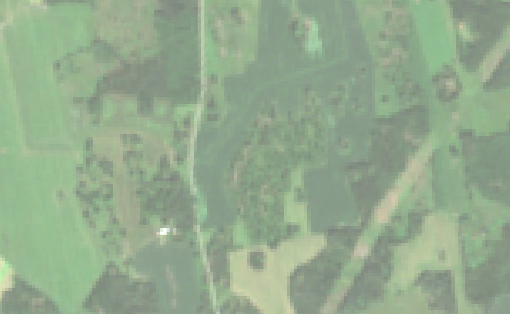
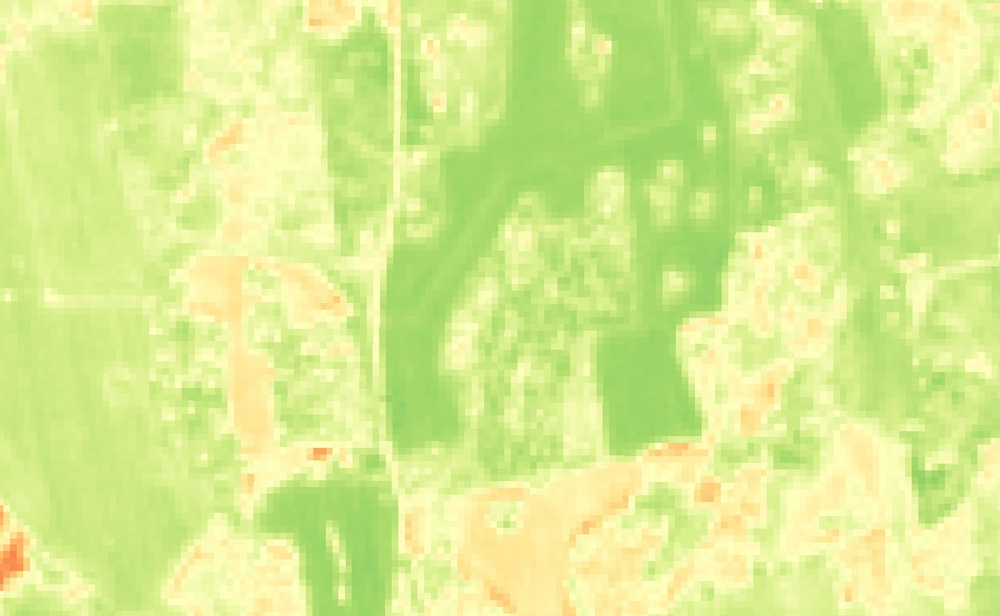

Field twin — winter wheat, Linköping
loading…


Sentinel-2, 4 Jul 2026 · outline: Jordbruksverket
The outlined field is the twin. Photo is what you would see; greenness is what the model is compared against. Press replay to watch last season pass over the field while the chart below draws the same days — pause any time to read, ← → step frame by frame.
Last season, replayed — did the model track the satellite?
the model is drawn from weather alone; every dot is a satellite pass
model
satellite
satellite, sun too low to trust
where we are in the replay
Why they disagree
Today
The crop year — measured so far, forecast ahead
model
spread of 5 weather years
satellite
satellite, sun too low to trust
today
Details
Weather feeding the model
air temperature, °C sunlight for photosynthesis, MJ/m²/day
The crop's clock
Plants count warmth, not days. Flowering starts at the dashed line.
Satellite passes this season
| Date | Day | Satellite | Model | Gap | Sun | Trusted |
|---|
Past seasons — how well the model did
| Season | Crop emerged | Error (NDVI) | Peak leaf area | Yield, dry matter |
|---|